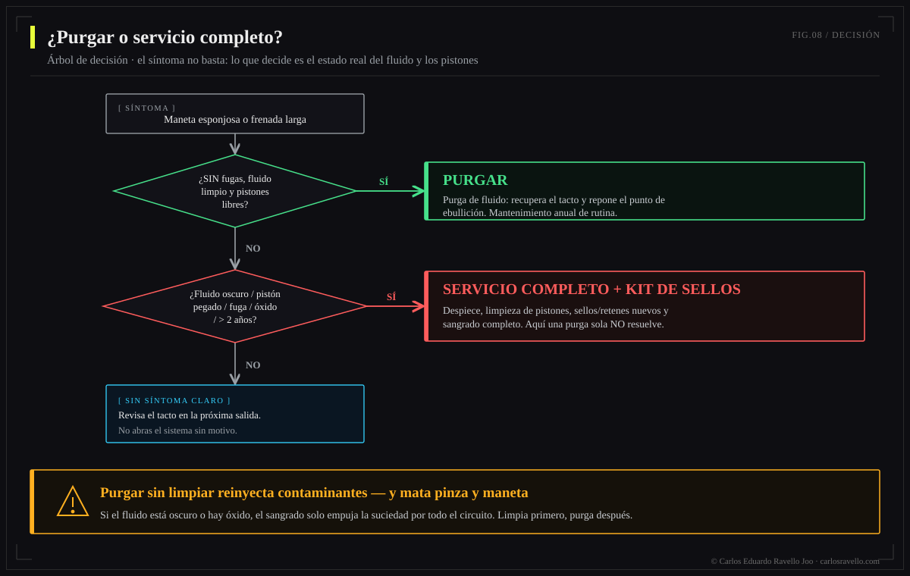

Sangrar substitui o fluido e tira o ar com o freio montado: conserta um freio saudável com fluido velho ou um pouco de ar. Não limpa a sujeira aderida a paredes, pistões e retentores. Se o sistema está contaminado ou os pistões estão presos, sangrar melhora por um tempo e o problema volta —porque você tratou o sintoma, não a causa—. Isso pede um serviço completo: abrir a pinça, limpar pistões e retentores, revisar o cilindro mestre e só então reabastecer. Regra: se você sangrou bem e continua mole ou roçando, o problema está no hardware, não no fluido.
Capítulo de serviço da Enciclopédia do Freio Hidráulico. É a confusão mais cara da oficina: o ciclista chega com um freio esponjoso, fazem "uma sangria", sai melhor… e em duas semanas volta igual. Não é que sangraram errado. É que o problema nunca foi o fluido.

O que cada operação realmente faz
| Sangria (bleed) | Serviço completo | |
|---|---|---|
| O que faz | Troca fluido e expulsa ar | Desmonta, limpa e reconstrói |
| Abre-se a pinça | Não | Sim |
| Limpam-se os pistões | Não | Sim |
| Revisam/trocam retentores | Não | Sim |
| Resolve fluido velho / ar | Sim | Sim |
| Resolve pistões presos | Não | Sim |
| Resolve retentores degradados | Não | Sim |
| Tempo típico | 20-30 min | 1-2 h |
Por que sangrar sobre sujeira não funciona
O fluido novo entra e sai pelos condutos, mas não esfrega as paredes nem desaloja os depósitos colados nos pistões. Imagine enxaguar com água limpa um copo com gordura seca: a água sai turva por um momento e o copo continua engordurado. No freio, essa "gordura" é: água emulsionada, fluido degradado pelo calor, partículas de pastilha e micro-corrosão. Ficam ali, e os pistões —que devem deslizar livres— seguem travados pela sujeira.
Se alguém colocou o fluido errado (DOT num sistema mineral ou vice-versa), os retentores incham ou se dissolvem. Nenhuma sangria reverte isso: o sistema precisa de reconstrução com o kit de retentores correto. O mesmo com pistões corroídos ou um cilindro mestre danificado. Sangrar às cegas ali é perder fluido e tempo. Ver DOT vs óleo mineral.
A árvore de decisão: sangrar ou serviço completo?
Antes de tocar em nada, diagnostique. Este é o critério que seguimos na oficina:

Sinais de que basta uma sangria
Manete levemente esponjosa que melhora bombeando; fluido ainda translúcido; pistões que retornam bem; passou o intervalo (DOT 6-12 meses, mineral 12-24). Aqui o fluido é o culpado e sangrar resolve.
Sinais de que você precisa de serviço completo
Manete que afunda apesar de sangrias corretas; roçar que não sai e pastilhas que tocam assimétrico (pistão preso); ponto de mordida errante; fluido escuro, leitoso ou com partículas; mordida que se perde com o calor mais rápido que o normal. Aqui o problema é hardware: abrir, limpar, avaliar retentores.
Uma sangria bem feita que não aguenta é um diagnóstico, não um fracasso: está te dizendo que a falha está nos pistões ou nos retentores. A segunda sangria não resolve; o serviço completo sim.
O que inclui um serviço completo bem feito
Retira-se a pinça e as pastilhas; empurram-se e extraem-se os pistões com cuidado; limpa-se cada pistão e seu alojamento; inspecionam-se os retentores (trocam-se se estiverem inchados, rígidos ou marcados); limpa-se o cilindro mestre e o reservatório; remonta-se com fluido novo, lacrado e correto para a marca; e sangra-se no final com técnica completa. A sangria é o último passo, não o único.

Intervalos
Sangria: DOT a cada 6-12 meses, mineral a cada 12-24. Serviço completo: a cada 2-3 anos ou ante sintomas de hardware. Em clima úmido, chuva frequente ou descidas longas, encurte os prazos.
BikeLab Studio.
Perguntas Frequentes
Sangrar o freio o limpa por dentro?
Não. Sangrar substitui o fluido e tira o ar, mas arrasta muito pouco da sujeira aderida a paredes, pistões e retentores. Se o sistema está contaminado ou os pistões presos, sangrar melhora por um tempo e o problema volta. Isso requer serviço completo: desmontar, limpar e, se preciso, trocar retentores.
Qual é a diferença entre sangrar e um serviço completo?
Sangrar é trocar o fluido e tirar o ar com o freio montado. Um serviço completo é abrir a pinça, limpar os pistões, revisar/substituir retentores, limpar o cilindro mestre e só então reabastecer com fluido novo. Sangrar trata o sintoma; o serviço completo, a causa.
Por que meu freio continua esponjoso depois de sangrar?
Pistões presos, retentores degradados, ar preso por técnica incompleta ou fluido errado. Nenhuma se resolve com outra sangria: é preciso abrir e diagnosticar. Se você sangrou bem e continua mole, o problema está no hardware.
De quanto em quanto tempo se sangra e de quanto um serviço completo?
Sangria: DOT 6-12 meses, mineral 12-24. Serviço completo: a cada 2-3 anos ou ante sintomas de hardware (pistões lentos, roçar persistente, manete que afunda apesar de sangrias, fluido contaminado). Em clima úmido ou uso intenso, antes.
Existem freios que de verdade não dá pra sangrar?
Sim: retentores dissolvidos por fluido errado, pistões corroídos ou cilindro mestre danificado não se consertam sangrando. Ali a sangria é inútil; o sistema precisa de reconstrução com kit de retentores ou substituição. Por isso primeiro se diagnostica.
Referências
- Park Tool — Hydraulic Disc Brake Service.
- Shimano / SRAM — manuais de serviço de pinça e sangria (procedimento e kit de retentores).
- GMBN / Pinkbike — diagnóstico de manete esponjosa e pistões presos.
- BikeLab Studio — DOT vs óleo mineral (compatibilidade de retentores).